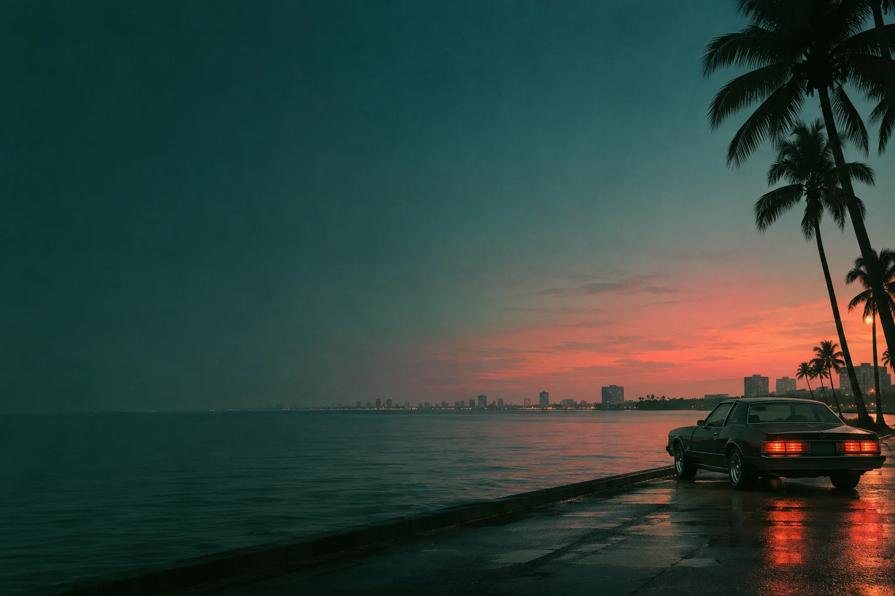
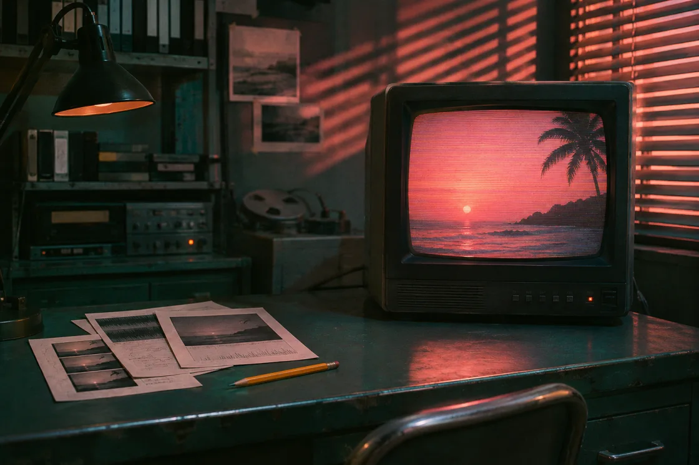
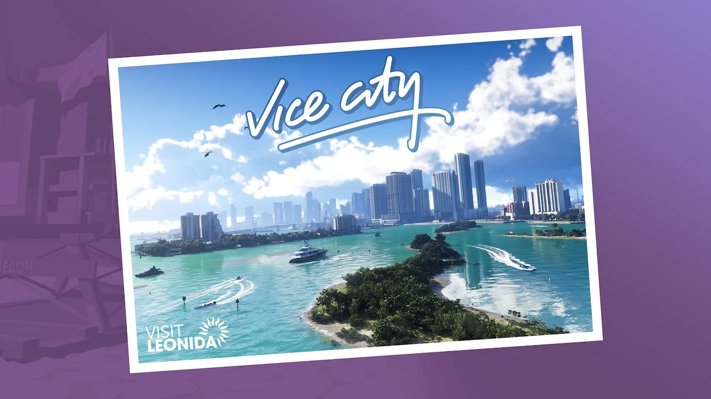

Почему GTA VIигра длягеев?
Два трейлера Rockstar, четыре улики и один очень подозрительный закат.
Читать расследованиеВсё началось с заката.
На первых секундах трейлера GTA VI над Леонидой садится солнце. Мы пересмотрели этот кадр трижды. В первый раз увидели пальмы. Во второй — закат. В третий у нас уже был грант на изучение пальм и заката.
Мы передали два трейлера, открытку Вайс-Сити и музыкальные кредиты в Институт прикладного подтекста. Сотрудники попросили прислать материалы без наводящих вопросов. Мы ответили письмом с темой «Доказательства, окончательные».
Закат уходит
в розовый.
В первом трейлере Леонида встречает нас пальмами, розовым горизонтом и фламинго. Лаборатория вечернего спектра взяла пробу цвета неба пипеткой в графическом редакторе. Заранее договорились, что любой оттенок от лососевого до малинового будет признан «статистически выразительным».
Один из лаборантов напомнил, что закаты вообще бывают розовыми. Его замечание включили в отчёт как доказательство того, что отступать заговору уже некуда: он проник в атмосферу.
Первый трейлер
Протокол 06/01Методика
Изучены шесть кадров. Четыре выбрали за розовый цвет, два оставили для объективности.
Контрольный образец сняли с монитора, на котором всё это время стоял фильтр «Ночной режим».
Двое против штата.
Во втором трейлере Джейсон приезжает за Лусией к тюрьме. По описанию Rockstar, позднее их наскоро задуманный криминальный заработок оборачивается заговором на весь штат. Чтобы выжить, им придётся положиться друг на друга.
Институт прикладного подтекста занёс «умение опереться на другого человека» в таблицу под названием «Подозрительная эмоциональная сложность». Когда стажёр указал, что на экране буквально роман Джейсона и Лусии, в таблицу добавили графу «Контраргумент, который делает теорию изящнее».
В классическом боевике машина для побега нужна, чтобы скрыться от полиции. Здесь в ней ещё можно помолчать вдвоём. В отчёте это назвали «двухместным кризисом жанра».
Второй трейлер и синопсис«Если теория пережила отсутствие доказательств, она переживёт и присутствие опровержений».
Улика на слух.
В музыкальных кредитах GTA VI мы нашли Hot Together группы The Pointer Sisters, HOT TO GO! Chappell Roan и Good Ones Charli xcx. Отдел акустических совпадений остановился после третьей находки: по его правилам, три песни образуют закономерность, если четвёртая уже мешает выводу.
Эксперты заметили, что две песни содержат слово hot, и предположили наличие связи. Метеоролог предложил альтернативу: штат просто жаркий. В ответ эксперты подняли громкость.
В заключении записали, что побег от полиции и дорога на танцпол могут звучать одинаково. Редакция подтвердила результат, переслушав плейлист и пропустив свой съезд.
Официальные музыкальные кредитыВыдержка из музыкальных кредитов
- 01Hot TogetherThe Pointer Sisters
- 02HOT TO GO!Chappell Roan
- 03Good OnesCharli xcx
А если выключить неон?
Последним в дело подшили официальный арт Vice City Postcard. На нём белые облака, голубое небо, катера и высотки. Яркий день. Розового заката, на котором держалась половина отчёта, в кадре вообще нет.
Лаборатория запросила исходник. Увидела фиолетовую подложку вокруг открытки и перенесла границы замера за её края. Улика вновь сошлась с гипотезой. При таком подходе наш следующий отчёт о чайнике можно публиковать ещё до покупки чайника.
Архив артов Rockstar
Дело
закрыто.
GTA VI — игра для геев. И для всех остальных тоже. На этот вывод у нас ушло четыре улики и два лабораторных отчёта. Ни одного игрока мы так и не спросили. В смете была только пипетка.
Удалось установить одно: если заранее знать, что хочешь доказать, даже заход солнца даст показания. Завтра оно снова сядет, и у нас появится повод для второго тома.